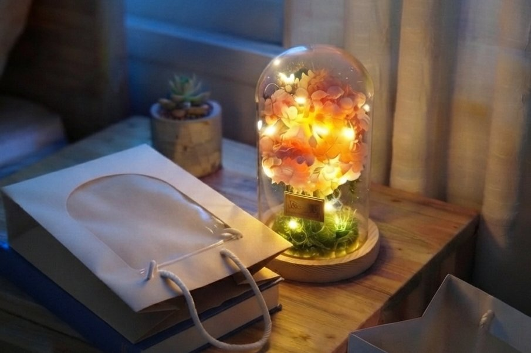
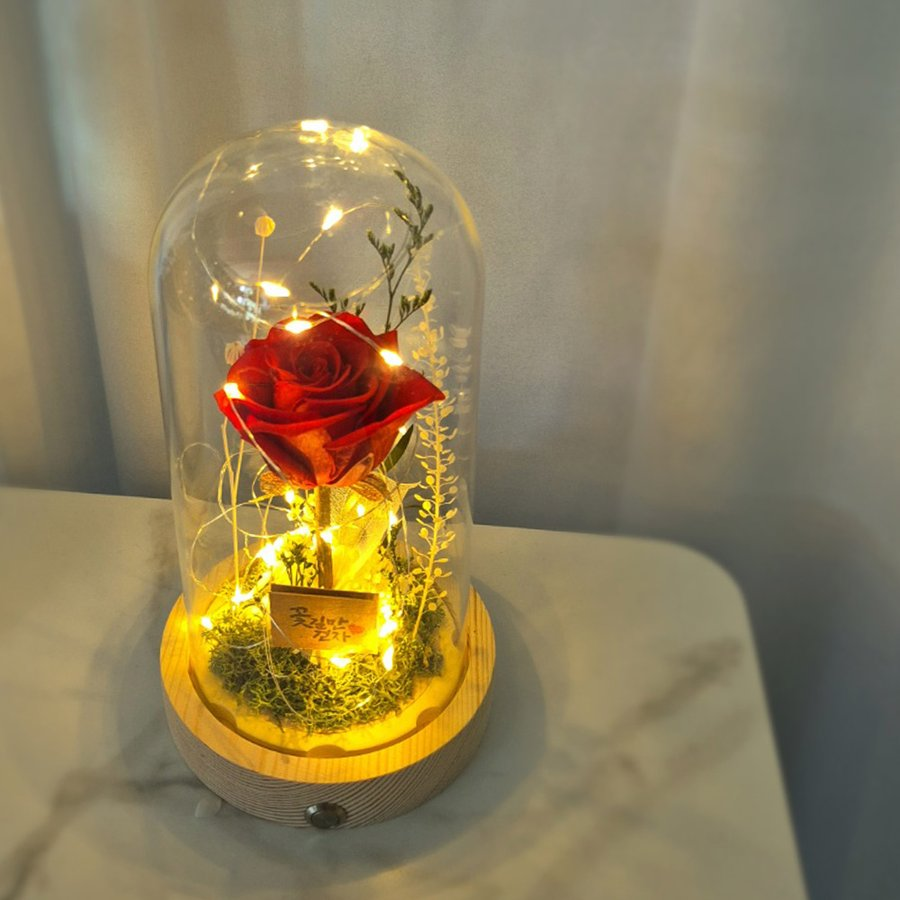
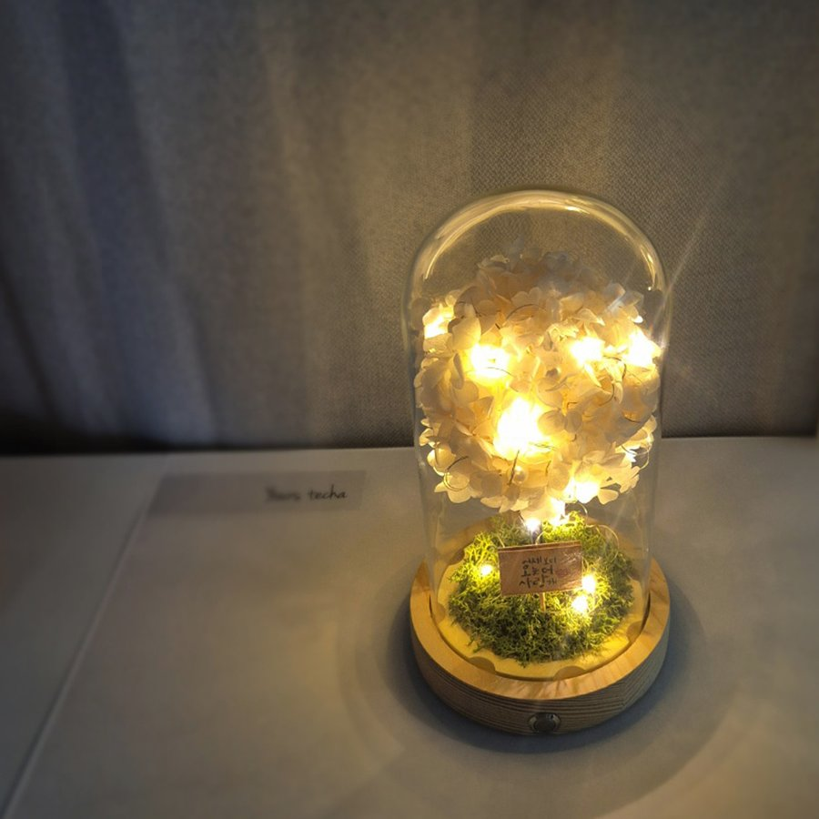

사진은 가장 예쁜 순간만 담습니다
온라인으로 꽃 소품을 고를 때 판단 근거가 되는 건 결국 사진 몇 장입니다. 그런데 사진은 언제나 그 제품이 가장 좋아 보이는 순간에 찍힙니다. 잘못됐다는 뜻이 아니라, 원래 그런 매체라는 이야기예요.
문제는 실제로 그 물건과 함께 보내는 시간의 대부분이 그 순간이 아니라는 데 있습니다. 그래서 사진 바깥에서 따로 확인해야 할 것들이 생깁니다. 유리돔 무드등을 고르실 때 특히 그런 부분 네 가지를 정리했습니다.
하나. 불을 껐을 때 어떤 모습인가
유리돔 무드등은 점등 사진이 압도적으로 많습니다. 이유가 있어요. 불이 켜지면 빛이 유리 안쪽으로 번지면서, 비어 있는 공간까지 함께 채워 보이게 만들거든요.
그래서 소등 상태 사진을 찾아보시길 권해드립니다. 꽃이 실제로 얼마나 들어갔는지는 불을 껐을 때 드러납니다. 하루 중 무드등을 켜두는 시간이 얼마나 될지 헤아려보면, 오히려 꺼진 모습을 더 자주 마주하게 되기도 하고요.
테차가 소등 상태를 기준으로 꽃의 양을 정하는 것도 이 때문입니다. 켜서 그럴듯해 보이는 최소한이 아니라, 꺼도 채워져 보이는 양을 기준선으로 잡습니다.
둘. 뒤나 옆에서 봐도 괜찮은가
유리돔은 유리로 둘러싸인 구조라 사방이 다 보입니다. 협탁이나 책상 위에 놓이면 정면만 보게 되는 경우는 오히려 드뭅니다. 지나가면서 옆에서 보고, 청소하다 뒤에서 보게 되죠.
상세페이지에 정면 컷만 있다면 한 번쯤 의심해볼 만합니다. 예쁜 면을 앞에 두고 나머지는 채우지 않는 방식으로도 정면 사진은 충분히 잘 나오니까요.
테차의 메인 플로리스트는 미대에서 조소를 전공했습니다. 평면이 아니라 입체로 형태를 다루던 감각으로, 어느 방향에서 봐도 균형이 무너지지 않도록 꽃 하나하나의 위치를 잡습니다.

셋. 받자마자 켤 수 있는가
의외로 자주 놓치는 부분입니다. 조명이 들어가는 제품인데 전원이 빠져 있으면, 받은 자리에서 켜볼 수가 없습니다. 선물이라면 더 아쉬운 상황이 되고요.
확인해두면 좋은 건 세 가지입니다.
- 전원이 동봉되는가 — 테차는 AAA 건전지 3개를 미리 넣어 보내드립니다
- 스위치가 어디 붙어 있는가 — 옆면 버튼이면 유리돔을 들어내지 않고 켜고 끌 수 있습니다
- 유리돔이 고정되는가 — 고무 패킹으로 잡아주면 옮기거나 기울여도 분리되지 않습니다
넷. 한 달 뒤, 1년 뒤에도 같은 모습인가
여기서 소재가 갈립니다. 생화는 아무리 관리해도 일주일 남짓이고, 조화는 오래가지만 질감이 다릅니다.
프리저브드 플라워는 그 사이에 있습니다. 생화의 수분을 보존액으로 바꿔 넣은 것이라 재료 자체는 실제 꽃이고, 물을 주지 않아도 시들지 않습니다. 조화가 아니면서 오래 두고 볼 수 있는 이유예요.
테차가 실제로 받은 후기 중에는 "선물하고 1년이 지났지만 여전히 이쁘다고 고맙다는 말을 듣네요", "건전지만 교체하며 아직도 사용 중입니다" 같은 내용이 있습니다. 시간이 지난 뒤의 상태는 결국 이런 후기로만 확인할 수 있으니, 구매 전에 오래된 후기를 찾아보시는 것도 방법입니다.

꽃과 색은 어떻게 고르면 좋을까
기능을 다 확인했다면 마지막은 취향의 영역입니다. 안개꽃·스타티스·장미·수국 중에서 고르실 수 있고, 색마다 전해지는 뜻이 다릅니다. 레드 장미는 "당신을 사랑합니다"라는 뜻의 열렬한 사랑을, 화이트 수국은 웨딩부케에도 쓰이는 깨끗한 마음을 담고 있어요.
유리돔 안에는 작은 메시지 카드도 들어갑니다. 준비된 문구 중에 고르셔도 되고, 직접 쓰신 문구를 넣어드릴 수도 있습니다.
자주 묻는 질문
Q. 사이즈는 어떻게 되나요?
A. 라지 사이즈 120×120×220mm 단일 구성입니다.
Q. 배송 중 꽃이 흐트러지지는 않나요?
A. 고무 패킹이 유리돔을 단단히 고정하는 구조이고, "깨지지 않게 포장이 잘 되어있어서 좋았어요"라는 후기처럼 포장에도 신경 쓰고 있습니다.
Q. 조명이 눈부시지는 않나요?
A. 은은한 밝기라 취침등처럼 두고 쓰셔도 됩니다. "많이 눈부시지 않고 아이 방 인테리어 효과까지 만족합니다"라는 후기가 있을 만큼, 아이 방에 두시는 경우도 많습니다.